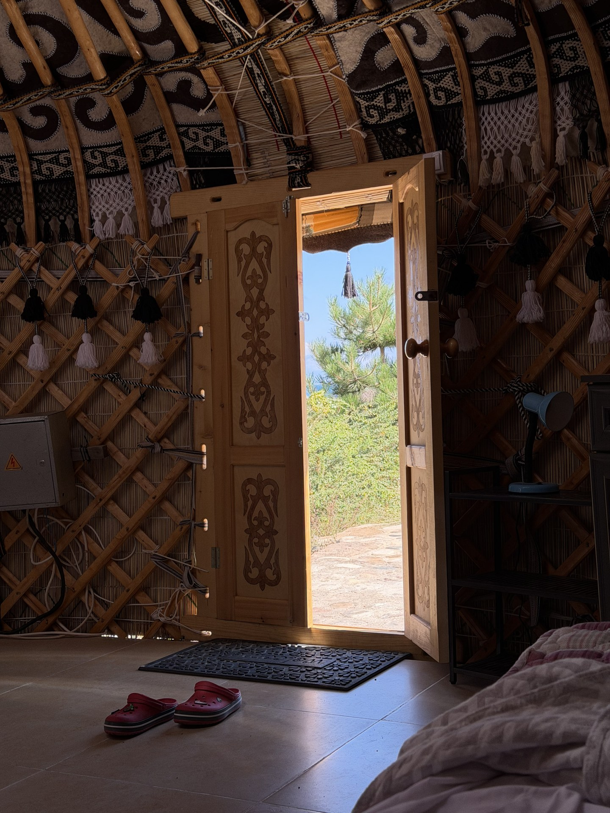
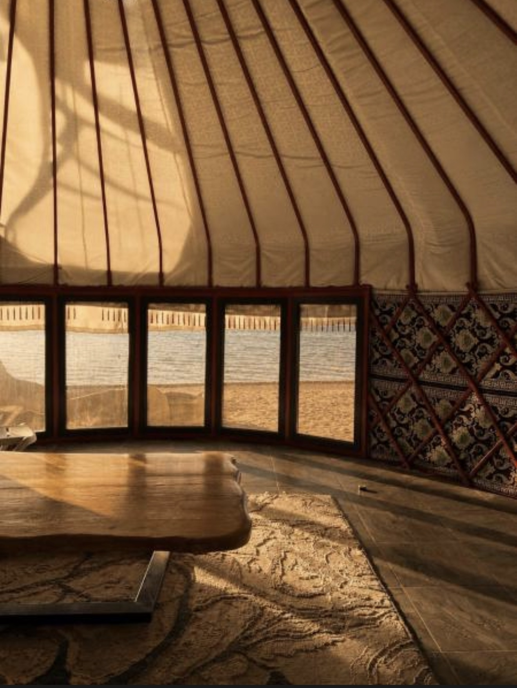
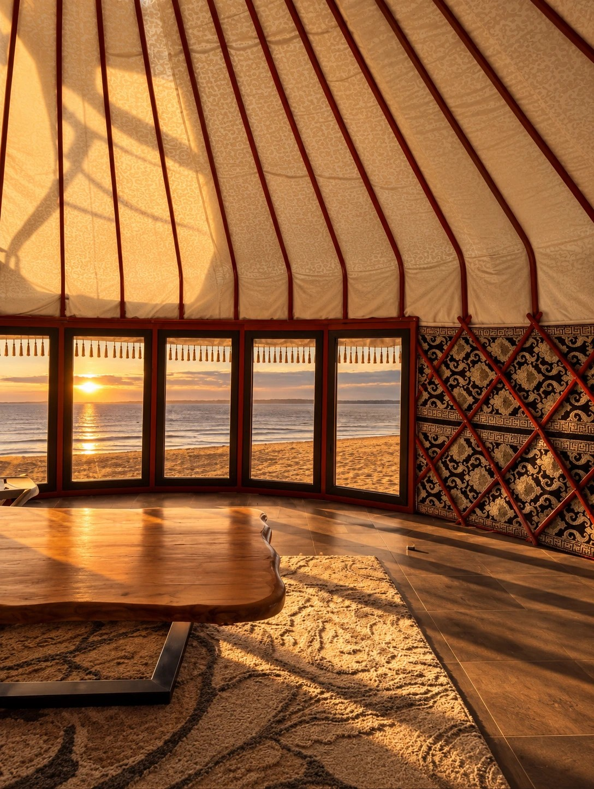

«Ак-Тенгир» переводится как «светлое пространство»
Место выбрано осознанно: с одной стороны горы, с другой — Иссык-Куль. Первые десять лет сюда нельзя было просто приехать — только по личному приглашению. Сейчас двери открыты для всех, а тишина осталась.

Баняпар и чабрец после дня в горах

Своя юртамягкий свет, войлок под ногами

Окна на водупросыпаешься — и сразу видишь озеро

Пляж на закатепесок ещё тёплый, вода — рядом